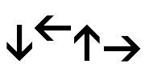

Steps for solving problem
- Define the problem
- Identify the input, output and constraints
- Find various possible alternative
- Select the best possible alternative
- Prepare detailed stepwise result for the identified alternative
- Compute the required result using the identified set of instructions
- Check the correctness of the answer obtained
Techniques of solving problem
- Representing a solution as Pseudo code
- Drawing a Flow chart
- Writing an Algorithm
Pseudo code
The term Pseudo is a Greek word, which means false or fake. Hence, Pseudo code means writing a fake code in any language that is spoken globally. This code is written in a manner such that in times of need it can be converted into a program source code of any desired programming language.
Example: Pseudo code of a program of adding two numbers
>> Get value of a & b
>> Add a & b
>> Return or print its sum
Flowchart
A flowchart is a pictorial representation of a sequence of steps to be performed for solving a given problem. It uses a fixed set of symbols to represent various types of instructions.
Basic Symbols of a flowchart
The American National Standard Institution (ANSI) has standardizes symbols that can be used while drawing a flowchart.
| Symbol | Name | Description |
|---|---|---|
| Oval | Start/End | |
| Parallelogram | Input/Output | |
| Diamond | Decision | |
| Rectangle | Process | |
| Circle | Connector | |
|  | Arrow | Flow line |
Example: Addition of two numbers

Algorithm
An Algorithm is a sequence of finite steps required to perform a specific task.
Example: Algorithm of addition of two numbers
Step 1: Start
Step 2: Take a, b, c
Step 3: a = 4
Step 4: b = 2
Step 5: c = a + b
Step 6: Print value of c
Step 7: Stop